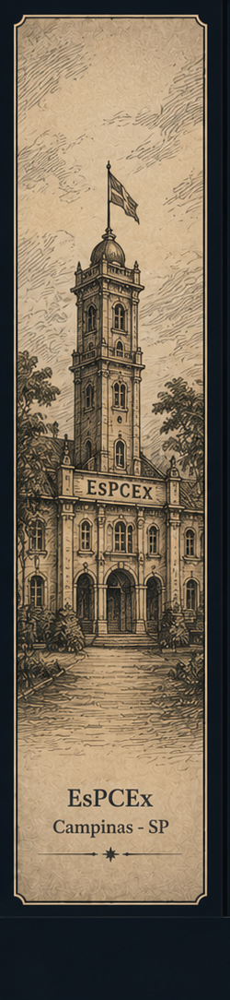
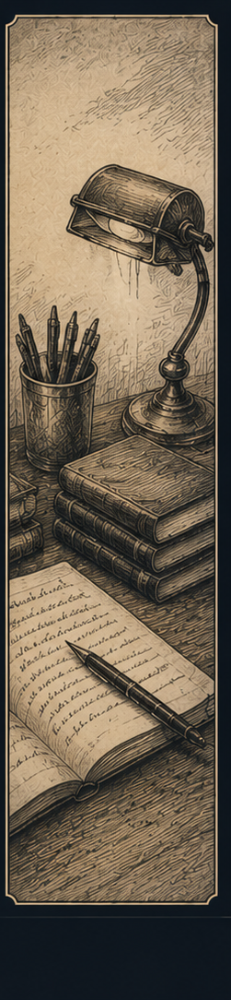

<!doctype html><html lang="pt-BR"><head><meta charset="utf-8"><meta name="viewport" content="width=device-width,initial-scale=1,viewport-fit=cover"><meta name="theme-color" content="#0d1623"><meta name="description" content="Plataforma pessoal de estudos"><link rel="manifest" href="manifest.json"><title>Estudos — V6</title><style>
:root{--bg:#0d1623;--panel:#172230;--panel2:#111c29;--line:#334253;--text:#eee5d4;--muted:#9ea9b6;--accent:#d5b77e;--accent2:#8fa6bd;--danger:#d98a7e;--shadow:0 16px 35px #0006;--serif:Georgia,'Times New Roman',serif;--sans:system-ui,-apple-system,Segoe UI,Roboto,sans-serif}*{box-sizing:border-box}html,body{margin:0;background:var(--bg);color:var(--text);font-family:var(--sans)}body{min-height:100vh}.app{min-height:100vh;padding-bottom:82px}.shell{max-width:1540px;margin:auto;padding:0 18px 24px;display:grid;grid-template-columns:230px minmax(0,1fr) 230px;gap:18px}.side{position:sticky;top:18px;height:calc(100vh - 100px);max-height:980px;border:1px solid #8d7b5a66;border-radius:10px;overflow:hidden;background:#d8c59e;box-shadow:var(--shadow);align-self:start}.side img{width:100%;height:100%;object-fit:cover;display:block;filter:saturate(.45) sepia(.2) contrast(.95)}.main{min-width:0}.top{padding:22px 6px 10px;display:flex;align-items:flex-start;justify-content:space-between;gap:15px}.brand{font:700 39px var(--serif);letter-spacing:.02em}.versionBadge{display:inline-block;margin-left:8px;font:700 11px var(--sans);letter-spacing:.08em;text-transform:uppercase;border:1px solid var(--accent);color:var(--accent);border-radius:999px;padding:4px 8px;vertical-align:middle}.motto{font:italic 20px var(--serif);color:#dbc8a5;margin-top:6px}.ornament{height:1px;background:linear-gradient(90deg,transparent,var(--accent),transparent);margin:14px 0 20px;position:relative}.ornament:after{content:'◆';position:absolute;left:50%;top:-10px;transform:translateX(-50%);font-size:12px;color:var(--accent);background:var(--bg);padding:0 8px}.themeBtn{border:1px solid var(--line);background:#111c29;color:var(--text);border-radius:999px;padding:9px 12px}.card{background:linear-gradient(145deg,#182534,#111b28);border:1px solid var(--line);border-radius:13px;padding:18px;margin-bottom:14px;box-shadow:0 7px 20px #0002}.card h2,.card h3{font-family:var(--serif);margin:0 0 14px}.row{display:flex;justify-content:space-between;align-items:center;gap:12px}.muted{color:var(--muted)}.empty{text-align:center;color:var(--muted);padding:28px 8px}.progress{height:9px;border-radius:99px;background:#2a3746;overflow:hidden}.bar{height:100%;background:linear-gradient(90deg,#9b7b43,var(--accent));border-radius:99px}.circle{width:128px;height:128px;border-radius:50%;display:grid;place-items:center;background:conic-gradient(var(--accent) var(--p),#344252 0);margin:18px auto}.circle:after{content:attr(data-p);width:96px;height:96px;border-radius:50%;background:#121d2a;display:grid;place-items:center;font-weight:800;font-size:21px}.grid2{display:grid;grid-template-columns:repeat(2,minmax(0,1fr));gap:14px}.week{display:grid;grid-template-columns:repeat(7,minmax(115px,1fr));gap:7px;overflow:auto}.weekcol{min-height:180px;background:#111c29;color:var(--text);border:1px solid var(--line);border-radius:10px;padding:9px;text-align:left}.weekcol.today{outline:2px solid var(--accent)}.goal{margin-top:5px;padding:5px 6px;background:#233142;border-radius:6px;white-space:nowrap;overflow:hidden;text-overflow:ellipsis;font-size:12px}.btn{border:1px solid var(--line);border-radius:9px;padding:9px 12px;background:#1d2a38;color:var(--text)}.primary{background:var(--accent);border-color:var(--accent);color:#18202a;font-weight:800}.danger{color:var(--danger)}.small{font-size:12px}.nav{position:fixed;z-index:30;bottom:0;left:0;right:0;background:#101b28ee;backdrop-filter:blur(12px);border-top:1px solid var(--line);display:flex;justify-content:center}.nav button{max-width:190px;flex:1;border:0;background:transparent;color:#84909d;padding:10px 4px 9px;font-size:12px}.nav button.active{color:var(--accent);font-weight:800}.nav b{display:block;font-size:19px;margin-bottom:2px}.subjectGrid{display:grid;grid-template-columns:repeat(3,minmax(0,1fr));gap:14px}.subjectCard{border:1px solid var(--line);border-radius:13px;background:linear-gradient(150deg,#182532,#111a25);overflow:hidden;cursor:pointer;transition:.18s transform,.18s border-color;box-shadow:0 8px 18px #0002}.subjectCard:hover{transform:translateY(-2px);border-color:#806d4e}.subjectArt{height:185px;background:#cbb78f}.subjectArt img{width:100%;height:100%;object-fit:cover;filter:saturate(.5) sepia(.25)}.subjectBody{padding:12px}.subjectBody h3{font-family:var(--serif);margin:0 0 8px}.pctline{font-size:13px;margin-bottom:5px}.list{display:grid;gap:9px}.listBtn{width:100%;text-align:left;border:1px solid var(--line);background:linear-gradient(145deg,#182534,#111b28);color:var(--text);border-radius:10px;padding:13px}.check{font-size:21px;border:0;background:none;color:var(--text)}.back{border:0;background:none;color:var(--accent);padding:0 0 12px;font-weight:700}.calendarHead{display:flex;justify-content:space-between;align-items:center;gap:12px}.calendar{display:grid;grid-template-columns:repeat(7,minmax(100px,1fr));gap:5px;overflow:auto}.day{min-height:125px;background:#111c29;color:var(--text);border:1px solid var(--line);border-radius:8px;padding:7px;text-align:left}.day.today{outline:2px solid var(--accent)}.day.noStudy{background:#20262b}.dayHead{font-weight:800}.day .goal{font-size:11px}.modalWrap{position:fixed;inset:0;background:#0009;z-index:50;display:grid;place-items:center;padding:16px}.modal{background:#121d2a;border:1px solid var(--line);border-radius:15px;width:min(760px,100%);max-height:90vh;overflow:auto;padding:19px;box-shadow:var(--shadow)}.modal input,.modal select,.modal textarea{width:100%;padding:10px;background:#0f1925;color:var(--text);border:1px solid var(--line);border-radius:9px;margin:6px 0 12px}.modalActions{display:flex;gap:8px;flex-wrap:wrap;margin-top:12px}.typeGrid{display:grid;grid-template-columns:repeat(5,1fr);gap:7px}.goalTypeCheck{accent-color:var(--accent)}.typeBtn{padding:10px 5px;border:1px solid var(--line);background:#172534;color:var(--text);border-radius:8px;font-size:12px}.typeBtn.sel{border-color:var(--accent);box-shadow:inset 0 0 0 1px var(--accent);color:var(--accent)}.topicPick{border:1px solid var(--line);border-radius:9px;margin:7px 0;padding:8px;background:#172534}.topicPick input{width:auto;margin:0 7px 0 0}.topicGroup{border:1px solid var(--line);border-radius:10px;margin:9px 0;overflow:hidden}.topicGroup summary{cursor:pointer;padding:10px;background:#182635}.topicItems{padding:8px}.progressRow{padding:10px 0;border-bottom:1px solid #334253}.theme-light{--bg:#f1eadc;--panel:#fffaf0;--panel2:#f5eee2;--line:#d5c7ae;--text:#2d2a25;--muted:#6f6a62;--accent:#8b6a35}.theme-light .top{background:#f1eadc}.theme-light .card,.theme-light .subjectCard,.theme-light .listBtn{background:#fffaf0}.theme-light .circle:after,.theme-light .weekcol,.theme-light .day,.theme-light .modal{background:#fffaf0;color:var(--text)}.theme-light .nav{background:#fffaf0ee}.theme-light .goal{background:#eee5d4}.theme-light .ornament:after{background:var(--bg)}.estimateList{display:grid;gap:9px}.estimateBook{border:1px solid var(--line);border-radius:10px;padding:12px;background:#172534}.installCard{border:1px solid var(--accent);background:linear-gradient(145deg,#1b2a38,#121d2a);border-radius:13px;padding:16px;margin-bottom:14px}.installCard h3{font-family:var(--serif);margin:0 0 7px}.installCard p{margin:6px 0 12px}.installBtn{font-weight:800}.badge{font-size:11px;border:1px solid var(--line);border-radius:999px;padding:4px 8px;color:var(--accent)}.stableCard{border:1px solid #8d7b5a99;background:linear-gradient(145deg,#1b2a38,#121d2a);border-radius:13px;padding:16px;margin-bottom:14px}.stableCard.warn{border-color:#d98a7e99}.stableUrl{font-family:ui-monospace,SFMono-Regular,Menlo,monospace;word-break:break-all;background:#0c1520;border:1px solid var(--line);border-radius:8px;padding:9px;margin:8px 0}.theme-light .stableUrl{background:#f5eee2}@media(max-width:1100px){.shell{grid-template-columns:150px minmax(0,1fr) 150px}.subjectGrid{grid-template-columns:repeat(2,minmax(0,1fr))}.subjectArt{height:160px}}@media(max-width:760px){.shell{display:block;padding:0 12px}.side{display:none}.top{padding-top:16px}.brand{font-size:31px}.motto{font-size:16px}.grid2{grid-template-columns:1fr}.subjectGrid{grid-template-columns:repeat(2,minmax(0,1fr));gap:10px}.subjectArt{height:130px}.subjectBody{padding:9px}.subjectBody h3{font-size:15px}.typeGrid{grid-template-columns:repeat(2,1fr)}.calendar{grid-template-columns:repeat(7,minmax(115px,1fr))}.week{grid-template-columns:repeat(7,minmax(125px,1fr))}.nav button{font-size:11px}.nav b{font-size:17px}}
</style></head><body><div id="app"></div><script>
'use strict';
const SUBJECTS=[{"name":"Matemática","art":"math","books":[{"name":"Logaritmo FME 2","chapters":[["Capítulo 5","Equações exponenciais","Equações logarítmicas"],["Capítulo 6","Inequações exponenciais","Inequações logarítmicas"],["Capítulo 7","Introdução aos logaritmos decimais","Características e mantissa","Regra da característica","Mantissa","Exemplos da tábua de logaritmo"]]},{"name":"Trigonometria FME 3","chapters":[["Capítulo 2","Triângulo retângulo: conceito, elementos e Pitágoras","Razões trigonométricas","Razões entre seno, cosseno e tangente e cotangente","Seno, cosseno, tangente e cotangente de ângulos complementares","Razões trigonométricas especiais"],["Capítulo 3","Arcos de circunferência","Medidas de arcos","Medidas de ângulos","Ciclo trigonométrico"],["Capítulo 4","Noções gerais","Seno","Cosseno","Tangente","Cotangente","Secante","Cossecante"],["Capítulo 5","Introdução e relações fundamentais"],["Capítulo 6","Teorema dos arcos notáveis","Aplicações"],["Capítulo 7","Redução do 2º ao 1º quadrante","Redução do 3º ao 1º quadrante","Redução do 4º ao 1º quadrante","Redução de [π/4, π/2] a [0, π/4]"],["Capítulo 8","Noções básicas","Funções periódicas","Ciclo trigonométrico","Função seno","Função cosseno","Função tangente","Função secante","Cossecante","Funções pares e funções ímpares"],["Capítulo 9","Fórmulas de adição","Fórmulas de multiplicação","Fórmulas de divisão","É dada tg X/2","Transformações em produto"],["Capítulo 10","Demonstração de identidade","Identidades no ciclo trigonométrico"],["Capítulo 11","Equações fundamentais","Resolução da equação sen a = sen b","Resolução da equação cos a = cos b","Resolução da equação tg a = tg b","Equações clássicas"],["Capítulo 12","Inequações fundamentais","Resolução de sen x > m","Resolução de sen x < m","Resolução de cos x > m","Resolução de cos x < m","Resolução de tg x > m","Resolução de tg x < m"],["Capítulo 13","Função arco seno","Função arco cosseno","Função arco tangente"]]},{"name":"Geometria plana FME 9","chapters":[["Capítulo 12","Teorema de Tales","Teorema das bissetrizes"],["Capítulo 13","Semelhança de triângulos","Casos ou critérios de semelhança","Potência de ponto"],["Capítulo 14","Relações métricas","Aplicações do teorema de Pitágoras"],["Capítulo 15","Relações métricas e cálculo de linhas notáveis"],["Capítulo 16","Conceitos e propriedades dos polígonos regulares"],["Capítulo 17","Conceitos e propriedades da circunferência"],["Capítulo 18","Equivalência plana: definições","Redução de polígonos por equivalência"],["Capítulo 19","Olhar geral sobre área de figuras planas"]]},{"name":"Sequências, matrizes e determinantes FME 4","chapters":[["Capítulos 1–3","Revisar bem PA","Revisar bem PG"],["Capítulo 4","Noção de matriz e matrizes especiais","Igualdade e adição","Produto de número por uma matriz e produto de matrizes","Matriz transposta","Matrizes inversíveis"],["Capítulo 5","Introdução e definição de determinantes (n ≤ 3)","Menor complementar e complemento algébrico","Teorema fundamental de Laplace","Propriedades dos determinantes","Abaixamento da ordem de um determinante","Matriz de Vandermonde"],["Capítulo 6","Introdução","Teorema de Cramer","Sistemas escalonados","Sistemas equivalentes","Sistema linear homogêneo","Características de uma matriz"]]},{"name":"Combinatória e probabilidade FME 5","chapters":[["Capítulo 1","PFC","Consequências do PFC","Combinações","Permutações com elementos repetidos","Complementos"],["Capítulo 2","Introdução e teorema binomial","Observações","Triângulo de Pascal","Expansão multinomial"],["Capítulo 3","Experimentos aleatórios e espaço amostral","Evento e combinação de eventos","Frequência relativa e definição de probabilidade","Teoremas sobre as probabilidades em espaço amostral finito","Espaços amostrais equiprováveis e probabilidade de um evento","Probabilidade condicional","Teorema da multiplicação","Teorema da probabilidade total","Independência de dois eventos e de três ou mais eventos","Lei binomial da probabilidade"]]},{"name":"Geometria espacial FME 10","chapters":[["Capítulo 1","Conceitos primitivos e postulados","Determinação de plano","Posições das retas","Interseções de planos"],["Capítulo 2","Paralelismo de retas","Paralelismo entre retas e posições relativas de uma reta a um plano","Duas retas reversas","Paralelismo entre planos e posições relativas de dois planos","Três retas reversas duas a duas","Ângulos de duas retas"],["Capítulo 3","Reta e plano perpendiculares","Planos perpendiculares"],["Capítulo 4","Projeção ortogonal sobre um plano","Segmento perpendicular e segmentos oblíquos e distâncias geométricas","Ângulo de uma reta com um plano","Reta de maior declive","Lugares geométricos"],["Capítulo 5","Definições e secções","Diedros congruentes","Secções igualmente inclinadas"],["Capítulo 6","Conceitos, elementos e relações entre as faces","Congruência de triedros","Triedros polares ou suplementares","Critérios ou casos de congruência","Ângulos poliedros convexos"],["Capítulo 7","Poliedros convexos","Poliedros de Platão","Poliedros regulares"],["Capítulo 8","Prisma ilimitado e prisma","Paralelepípedos","Diagonal e área do cubo","Diagonal e área do paralelepípedo","Razão entre paralelepípedos","Volume de um sólido e volume de um paralelepípedo","Área lateral e área total","Princípio de Cavalieri","Volume do prisma","Secções planas do cubo","Problemas gerais sobre prismas"],["Capítulo 9","Pirâmide ilimitada e pirâmide","Volume da pirâmide","Área lateral e área total da pirâmide"],["Capítulo 10","Preliminar","Cilindro","Área lateral e total"],["Capítulo 11","Preliminar","Cone: área lateral e total","Volume do cone"],["Capítulo 12","Definições","Área e volume de fuso e cunha","Dedução das fórmulas"],["Capítulo 13","Secção de uma pirâmide","Tronco de pirâmide","Tronco de cone","Problemas gerais","Tronco de prisma","Tronco de cilindro"],["Capítulo 14","Esfera e cubo","Esfera e octaedro","Esfera e tetraedro","Inscrição e circunscrição","Prisma e cilindro","Pirâmide e cone","Prisma e pirâmide","Cilindro e cone","Cilindro e esfera","Esfera e cone reto","Esfera e cone equilátero","Esfera e tronco de cone","Exercícios gerais"],["Capítulo 15","Superfície de revolução","Sólido de revolução"],["Capítulo 16","Superfície e definição das áreas das superfícies esféricas","Sólidos esféricos","Dedução das fórmulas"]]},{"name":"Geometria analítica FME 7","chapters":[["Capítulo 1","Noções básicas","Posições de um ponto","Distância entre dois pontos","Razão entre segmentos colineares e coordenadas do terceiro ponto","Condição para alinhamento de três pontos","Complemento"],["Capítulo 2","Equação geral","Interseção de duas retas","Posições relativas de duas retas","Feixe de retas concorrentes","Feixe de retas paralelas","Formas da equação da reta"],["Capítulo 3","Coeficiente angular","Cálculo de m","Equação de uma reta passando por dois pontos","Condições de paralelismo","Condições de perpendicularismo","Ângulo de duas retas"],["Capítulo 4","Translação do sistema e distância entre ponto e reta","Área do triângulo","Variação de sinal de funções e inequações do 1º grau","Bissetrizes dos ângulos de duas retas","Complemento"],["Capítulo 5","Equação reduzida","Equação normal e reconhecimento","Ponto e circunferência","Inequações do 2º grau","Reta e circunferência","Circunferências algébricas"],["Capítulo 6","Problemas de tangência","Determinação de circunferência","Complemento"],["Capítulo 7","Elipse","Hipérbole","Parábola","Reconhecimento de uma cônica","Interseção de cônicas","Tangentes a uma cônica"],["Capítulo 8","Equação de um lugar geométrico","Interpretação da equação do segundo grau"]]},{"name":"Complexos e Polinômios FME 6","chapters":[["Capítulo 1","Operação com pares ordenados","Forma algébrica","Forma trigonométrica","Potenciação","Radiciação","Equações binomias e trinomias"],["Capítulo 2","Polinômios e igualdade","Operações","Grau","Divisão","Divisão por binômios do 1º grau"],["Capítulo 3","Introdução e definições","Número de raízes","Multiplicidade de uma raiz","Relações entre coeficientes e raízes","Raízes complexas","Raízes gerais","Raízes racionais"],["Capítulo 4","Transformações","Equações recíprocas"],["Capítulo 5","Apêndice"]]}]},{"name":"Português","art":"port","books":[{"name":"A Gramática para Concursos Militares","chapters":[["Capítulo 8","Definição e classificação","Identificação","Emprego dos artigos definidos","Questões"],["Capítulo 9","Definição e identificação","Classificação e emprego dos numerais","Questões"],["Capítulo 10","Definição e identificação","Classificação: pronomes retos","Classificação: pronomes oblíquos","Oblíquos tônicos","Pronomes de tratamento e classificação dos definidos","Classificação dos indefinidos","Classificação dos interrogativos","Emprego dos demonstrativos e valores estilísticos","Classificação e emprego dos relativos","Questões"],["Capítulo 11","Definição e identificação","Flexões dos verbos","Estrutura verbal","Locução verbal","Aspecto verbal","Formas nominais","Voz verbal","Formação dos tempos","Formação do imperativo","Formação dos tempos compostos","Pretérito perfeito, imperfeito e mais-que-perfeito","Futuro do presente e futuro do pretérito","Presente e futuro","Correlação verbal","Classificação dos verbos","Pronominais até paradigmas","Paradigmas","Questões"],["Capítulo 12","Definição e identificação","Classificação até dúvida","Dúvida","Palavras e locuções denotativas","Variação em grau"],["Capítulo 13","Definição e identificação e classificação","Combinações e locuções","Valores relacionais","Questões"],["Capítulo 14","Definição e identificação","Locução conjuntiva até coordenativas","Subordinativas","Questões"],["Capítulo 15","Tópico único"],["Capítulo 16","Sintaxe"],["Capítulo 17","Frase, oração e período"],["Capítulo 18","Definição e sujeito","Classificação do sujeito","Predicado e predicação verbal","Predicativo do sujeito e classificação do predicado","Questões"],["Capítulo 19","Definição e objeto direto","Objeto direto x sujeito e objeto indireto","Complemento nominal até agente da passiva","Agente x complemento nominal","Questões"],["Capítulo 20","Definição até função sintática","Função sintática dos pronomes pessoais","Adjunto adverbial até aposto","Aposto e classificação do aposto","Aposto x adjunto adnominal até vocativo x aposto","Questões"],["Capítulo 21","Conceitos de coordenação e orações assindéticas e sindéticas","Orações sindéticas aditivas até explicativas","Paralelismo sintático","Questões"],["Capítulo 22","Conceito de subordinação e subordinadas subjetivas","Orações subordinadas substantivas predicativas até justapostas","Orações subordinadas adjetivas e valores circunstanciais","Orações subordinadas adjetivas justapostas","Orações subordinadas adverbiais até finais","Proporcionais e truncamento sintático","Questões"],["Capítulo 23","Teoria: tópico único","Questões"],["Capítulo 24","Tópico único"],["Capítulo 25","Definição e vírgula","Ponto e vírgula até parênteses","Aspas","Questões"],["Capítulo 26","Definição e concordância com sujeito simples","Concordância com o sujeito composto e do ser","Casos especiais de concordância e silepse","Concordância com adjetivos e casos especiais","Silepse de gênero e número","Questões"],["Capítulo 27","Definição e regência verbal","Regência nominal","Questões"],["Capítulo 28","Definição e casos obrigatórios","Casos proibitivos, facultativos e especiais","A crase e certas implicações","Questões"],["Capítulo 29","Definição","Vocábulo se","O vocábulo como","Questões"],["Capítulo 30","Próclise e casos facultativos","Nas locuções verbais","Questões"],["Capítulo 31","Definição","Figura de palavras","Figuras de sintaxe e de pensamento","Figuras fônicas e vícios de linguagem","Questões"]]}]},{"name":"Física","art":"physics","books":[{"name":"Tópicos de física 1 Mecânica","chapters":[["Capítulo 15","Bloco 2: teoria e exercícios nível 1","Exercícios nível 2 e 3","Apêndice: centro de massa"],["Capítulo 16","Bloco 1","Bloco 2: condições de equilíbrio","Centro de gravidade e questões","Equilíbrio de corpos apoiados até faça você mesmo","Alavancas e questões"],["Capítulo 17","Estática dos fluidos","Densidade relativa","Conceito de pressão e questões","Bloco 2: sete e oito","Teorema de Stevin e questões nível 1","Nível 2 e teorema de Pascal","Consequências do teorema de Pascal e vasos comunicantes","Prensa hidráulica e questões","Teorema de Arquimedes e questões nível 1","Questões até nível 3"]]},{"name":"Tópicos de física 2 termologia, óptica e ondulatória","chapters":[["Capítulo 1","Temperatura: bloco 1","Temperatura: bloco 2"],["Capítulo 2","O calor e sua propagação: bloco 1","Bloco 2"],["Capítulo 3","Calor sensível e calor latente: bloco 1","Bloco 2","Bloco 3","Bloco 4","Bloco 5"],["Capítulo 4","Gases perfeitos: bloco 1","Bloco 2","Bloco 3"],["Capítulo 5","Termodinâmica: bloco 1","Termodinâmica: bloco 2","Termodinâmica: bloco 3","Termodinâmica: bloco 4","Bloco 1","Bloco 2","Bloco 3","Bloco 4"],["Capítulo 6","Dilatação térmica: bloco 1","Bloco 2","Bloco 3"],["Capítulo 7","Ondulatória MHS: bloco 1","Bloco 2","Apêndice"],["Capítulo 8","Ondas: bloco 1","Ondas: bloco 2","Ondas: bloco 3","Ondas: bloco 4","Ondas: bloco 5"],["Capítulo 9","Acústica: bloco 1","Acústica: bloco 2","Acústica: bloco 3","Acústica: bloco 4","Acústica: bloco 5"],["Capítulo 10","Fundamentos da óptica geométrica: bloco 1","Bloco 2","Bloco 3: metade 1","Bloco 3: metade 2"],["Capítulo 11","Reflexão da luz: bloco 1","Bloco 2","Bloco 3","Bloco 4: metade 1","Bloco 4: metade 2","Bloco 5"],["Capítulo 12","Refração da luz: bloco 1 metade 1","Bloco 1 metade 2","Bloco 2","Bloco 3","Bloco 4"],["Capítulo 13","Lentes esféricas: bloco 1 metade 1","Bloco 1 metade 2","Bloco 2","Bloco 3"],["Capítulo 14","Instrumentos ópticos: bloco 1","Óptica da visão: metade 1","Óptica da visão: metade 2"]]},{"name":"Tópicos de física 3 Eletricidade","chapters":[["Capítulo 1","Cargas elétricas: bloco 1 metade 1","Bloco 1 metade 2","Cargas elétricas: bloco 2 questões nível 1","Bloco 2 questões nível 2"],["Capítulo 2","Campo elétrico: bloco 1 questões nível 1","Bloco 1 questões nível 2","Campo elétrico: bloco 2 teoria","Bloco 2 questões","Apêndice"],["Capítulo 3","Potencial elétrico: bloco 1","Bloco 2","Bloco 3","Bloco 4","Bloco 5 teoria","Bloco 5 questões"],["Capítulo 4","Corrente elétrica e resistores: bloco 1 teoria","Corrente elétrica: bloco 1 questões","Corrente elétrica: bloco 2","Corrente elétrica: bloco 3 teoria","Corrente elétrica: bloco 3 questões","Corrente elétrica: bloco 4 nível 1","Bloco 4 questões"],["Capítulo 5","Associação de resistores: bloco 1","Bloco 2","Bloco 3 nível 1","Questões"],["Capítulo 6","Circuitos elétricos: bloco 1 teoria","Bloco 1 questões","Circuitos elétricos: bloco 2","Bloco 3","Bloco 4"],["Capítulo 7","Capacitores: bloco 1 metade 1","Bloco 1 metade 2","Capacitores: bloco 2"],["Capítulo 8","O Campo Magnético e Sua Influência Sobre Cargas elétricas: bloco 1 teoria","Bloco 1 questões","Bloco 2","Bloco 3 nível 1","Nível 2 e 3"],["Capítulo 9","A Origem do Campo Magnético: bloco 1","Bloco 2","Bloco 3","Bloco 4"],["Capítulo 10","Força Magnética Sobre Correntes Elétricas: bloco 1 teoria","Bloco 1 questões","Bloco 2"],["Capítulo 11","Indução Eletromagnética: bloco 1 metade 1","Bloco 1 metade 2","Bloco 2","Bloco 3","Bloco 4","Apêndice"]]}]},{"name":"Química","art":"chem","books":[{"name":"Química Geral Feltre 1","chapters":[["Capítulo 8","Classificação das reações químicas","Quando ocorre uma reação química","Balanceamento de equações químicas","Método de oxirredução","Desafio"],["Capítulo 9","Grandezas, unidades e medidas","O medo dos cálculos e o uso de gráficos","Leis ponderais das reações químicas","Consequências das leis ponderais","Estudo físico dos gases","Leis físicas dos gases até equação geral","Condições normais de temperatura e pressão","Leis volumétricas das reações químicas","Unidade de massa atômica (u)","Massa molecular e conceito de mol","Massa molar (M)","Volume molar","Mistura gasosa até conceito de volume parcial","Massa molecular aparente de uma mistura gasosa","Densidade dos gases","Difusão e efusão até leitura","Desafio"],["Capítulo 10","Cálculo de fórmulas","Cálculo de fórmula mínima","Cálculo de fórmula molecular","Estequiometria ou cálculos estequiométricos","Dois casos particulares","Terceiro e quarto caso","Quinto e sexto caso","Desafio"],["Capítulo 11","Introdução","O aproveitamento dos recursos naturais 1","O aproveitamento dos recursos naturais 2","Os principais elementos não metálicos","Os principais metais e ligas metálicas até cobre","Os principais metais e ligas metálicas 2","Os principais ácidos","As principais bases","Desafio"]]},{"name":"Físico-química Feltre 2","chapters":[["Capítulo 1","Dispersões e Soluções 1","Dispersões e Soluções 2","Concentração das soluções","3.2 e 3.3","3.4 a 3.6","Diluição das Soluções","Mistura de Soluções","Análise Volumétrica 1","Análise Volumétrica 2"],["Capítulo 2","A evaporação dos líquidos puros","A ebulição dos líquidos puros","O congelamento dos líquidos puros","Soluções de solutos não voláteis e não iônicos 1","Soluções de solutos não voláteis e não iônicos 2","Osmometria 1","Osmometria 2","As propriedades coligativas nas soluções iônicas","Leitura e desafio"],["Capítulo 3","A energia e as transformações da matéria","Por que as reações químicas liberam ou absorvem calor","Fatores que influem na entalpia","Equação termoquímica","Casos particulares das entalpias 1","Casos particulares das entalpias 2","Lei de Hess","Desafio"],["Capítulo 4","Velocidade das reações químicas","Como as reações ocorrem","O efeito da energia sobre as reações químicas","O efeito da concentração dos reagentes","O efeito dos catalisadores"],["Capítulo 5","Estudo geral dos equilíbrios químicos 1.4","Estudo geral dos equilíbrios químicos até exercícios resolvidos","Estudo geral dos equilíbrios químicos: exercícios complementares","Deslocamento do equilíbrio até 2.3","Deslocamento do equilíbrio 2.4","Exercícios"],["Capítulo 6","Equilíbrios iônicos em geral","Equilíbrio iônico na água 2.2","Equilíbrio iônico na água 2.3","Exercícios complementares 1","Exercícios complementares 2","Hidrólise de sais","Exercícios complementares","Desafio"],["Capítulo 7","Introdução e aplicação das leis das massas","Deslocamento do equilíbrio heterogêneo","Deslocamento do equilíbrio heterogêneo 4.2","Exercícios complementares"],["Capítulo 8","Introdução e reações de oxirredução","O acerto dos coeficientes","A pilha de Daniell 1","A pilha de Daniell 2","A força eletromotriz e tabelados potenciais","Cálculo da força eletromotriz","Previsão da espontaneidade","As pilhas em nosso cotidiano 1","As pilhas em nosso cotidiano 2","Corrosão e reações de oxirredução","Leitura e desafio"],["Capítulo 9","1, 2 e 3","Propriedade de descarga dos íons","1º 5 e 6","2º 5 e 6","7 e 8","Exercícios"],["Capítulo 10","O início da era nuclear e os efeitos das emissões radioativas","Recordando alguns conceitos e a natureza das radiações","Cinética das desintegrações","Famílias radioativas e reações artificiais","Fissão nuclear","Fusão nuclear e aplicações das reações nucleares","Perigos e acidentes nucleares"]]},{"name":"Química Orgânica Feltre 3","chapters":[["Capítulo 1","pp. 2–6: A presença da Química Orgânica em nossa vida; A origem da vida; O nascimento da Química Orgânica; A evolução da Química Orgânica; Histórico; Síntese e análise na Química Orgânica"],["Capítulo 1","pp. 7–11: A Química Orgânica nos dias atuais; Algumas ideias sobre a análise orgânica; Atividades práticas; Revisão; Exercícios; Exercícios complementares"],["Capítulo 1","pp. 12–16: Características do átomo de carbono; O carbono é tetravalente; O carbono forma ligações múltiplas; O carbono liga-se a várias classes de elementos químicos; O carbono forma cadeias; Revisão; Exercícios; Classificação dos átomos de carbono em uma cadeia"],["Capítulo 1","pp. 17–21: Tipos de cadeia orgânica; Quanto ao fechamento da cadeia; Quanto à disposição dos átomos; Quanto aos tipos de ligação; Quanto à natureza dos átomos; Um resumo das cadeias carbônicas; Revisão; Exercícios"],["Capítulo 1","pp. 22–24: Fórmula estrutural; Revisão; Exercícios; Leitura; Questões sobre a leitura; Desafio"]]}]},{"name":"História","art":"history","books":[{"name":"História Global — Gilberto Cotrim","chapters":[["Capítulo 7","Mercantilismo e Sistema Colonial"],["Capítulo 8","Início da colonização","1º Administração Portuguesa e igreja católica","2º Administração Portuguesa e igreja católica","Economia colonial: o açúcar","1º Escravidão e resistência","2º Escravidão e resistência","1º Domínio espanhol e Brasil holandês","2º Domínio espanhol e Brasil holandês","1º Expansão territorial da colônia","2º Expansão territorial da colônia","3º Expansão territorial da colônia","1º Economia colonial: mineração","2º Economia colonial: mineração"],["Capítulo 9","Antigo Regime e Revolução Inglesa/1","Antigo Regime e Revolução Inglesa/2","Iluminismo e despotismo/1","Iluminismo e despotismo/2","Revolução Industrial/1","Revolução Industrial/2","Estados Unidos","Revolução Francesa/1","Revolução Francesa/2"],["Capítulo 10 — páginas 386–395","386–390","391–395"],["Capítulo 11 — páginas 396–404","396–400","401–404"],["Capítulo 12 — páginas 405–416","405–409","410–414","415–416"],["Capítulo 13 — páginas 417–428","417–421","422–426","427–428"],["Capítulo 14 — páginas 429–443","429–433","434–438","439–443"],["Capítulo 15 — páginas 444–455","444–448","449–453","454–455"],["Capítulo 16 — páginas 456–465","456–460","461–465"],["Capítulo 17 — páginas 466–478","466–470","471–475","476–478"],["Capítulo 18 — páginas 479–489","479–483","484–488","489"],["Capítulo 19 — páginas 490–505","490–494","495–499","500–504","505"],["Capítulo 20 — páginas 506–515","506–510","511–515"],["Capítulo 21 — páginas 516–525","516–520","521–525"],["Capítulo 22 — páginas 526–539","526–530","531–535","536–539"],["Capítulo 23 — páginas 540–555","540–544","545–549","550–554","555"],["Capítulo 24 — páginas 556–563","556–560","561–563"],["Capítulo 25 — páginas 564–577","564–568","569–573","574–577"],["Capítulo 26 — páginas 578–590","578–582","583–587","588–590"],["Capítulo 27 — páginas 591–609","591–595","596–600","601–605","606–609"],["Capítulo 28 — páginas 610–618","610–614","615–618"],["Capítulo 29 — páginas 619–631","619–623","624–628","629–631"],["Capítulo 30 — páginas 632–645","632–636","637–641","642–645"],["Capítulo 31 — páginas 646–667","646–650","651–655","656–660","661–665","666–667"],["Capítulo 32 — páginas 668–683","668–672","673–677","678–683"],["Capítulo 33 — páginas 684–700","684–688","689–693","694–698","699–700"],["Capítulo 34 — páginas 701–716","701–705","706–710","711–716"]]}]},{"name":"Geografia","art":"geo","books":[{"name":"Apostilas de Geografia","chapters":[["Apostila 1 — Vegetação","Conceitos e características da vegetação","Formações vegetais","Vegetação brasileira","Distribuição e impactos ambientais","Relações entre vegetação e espaço geográfico","Lista de exercícios"],["Apostila 2 — Hidrografia","Conceitos fundamentais de hidrografia","Hidrografia brasileira","Bacias hidrográficas","Recursos hídricos e aproveitamento das águas","Gestão, impactos e conservação dos recursos hídricos","Lista de exercícios"],["Apostila 3 — Domínios Morfoclimáticos","Conceitos e características dos domínios morfoclimáticos","Domínios da Amazônia e dos Cerrados","Domínios da Caatinga e dos Mares de Morros","Domínios das Araucárias e das Pradarias","Relações, transições e impactos ambientais","Lista de exercícios"],["Apostila 4 — Mineração","Recursos minerais e mineração","Mineração no Brasil","Principais áreas e minerais explorados","Impactos econômicos e ambientais da mineração","Políticas, produção e circulação mineral","Lista de exercícios"],["Apostila 5 — Fonte(s) de Energia","Conceitos e classificação das fontes de energia","Fontes de energia no Brasil","Fontes renováveis","Fontes não renováveis e matriz energética","Energia, geopolítica e impactos socioambientais","Lista de exercícios"],["Apostila 6 — População","Conceitos e distribuição da população","Crescimento e estrutura da população","Estrutura etária e indicadores demográficos","População brasileira","Dinâmica demográfica e distribuição espacial","Lista de exercícios"],["Apostila 7 — Migração","Conceitos e tipos de migração","Migrações internas","Migrações internacionais","Migração no Brasil e seus impactos","Fluxos migratórios contemporâneos","Lista de exercícios"],["Apostila 8 — Urbanização","Conceitos e processo de urbanização","Urbanização mundial","Urbanização brasileira","Metropolização e rede urbana","Hierarquia urbana e dinâmica das cidades","Lista de exercícios"],["Apostila 9 — Problemas Urbanos","Crescimento urbano e ocupação do espaço","Segregação socioespacial e habitação","Mobilidade e problemas de transporte","Problemas ambientais urbanos","Planejamento e qualidade de vida urbana","Lista de exercícios"],["Apostila 10 — Industrialização","Conceitos e fases da industrialização","Industrialização mundial","Industrialização brasileira","Distribuição espacial e desconcentração industrial","Indústria, tecnologia e economia global","Lista de exercícios"],["Apostila 11 — Transportes","Modais de transporte","Sistema de transportes brasileiro","Infraestrutura e integração territorial","Transportes, economia e circulação","Logística e redes de transporte","Lista de exercícios"],["Apostila 12 — Agricultura","Conceitos e sistemas agrícolas","Agricultura brasileira","Estrutura fundiária e questões agrárias","Modernização, agronegócio e impactos ambientais","Produção, mercado e espaço agrário","Lista de exercícios"]]}]},{"name":"Inglês","art":"eng","english":true,"books":[]}];
const KEY='estudos_v6_state';
const BACKUP_KEY='estudos_v6_backup';
let view='home',path=[],calBase=new Date(),homeDayMode=true;
const today=()=>new Date().toISOString().slice(0,10);
const fmt=d=>new Date(d+'T12:00:00').toLocaleDateString('pt-BR',{weekday:'long',day:'2-digit',month:'2-digit',year:'numeric'});
const shortFmt=d=>new Date(d+'T12:00:00').toLocaleDateString('pt-BR',{day:'2-digit',month:'2-digit'});
const esc=x=>String(x??'').replace(/[&<>"']/g,m=>({'&':'&amp;','<':'&lt;','>':'&gt;','"':'&quot;',"'":'&#39;'}[m]));
function fresh(){return {done:{},goals:{},nos:{},theme:'dark',history:{simulados:[]}}}
let state=fresh();
let storageReady=false;
let deferredInstallPrompt=null;
let installDismissed=false;
window.addEventListener('beforeinstallprompt',e=>{e.preventDefault();deferredInstallPrompt=e;render();});
window.addEventListener('appinstalled',()=>{deferredInstallPrompt=null;installDismissed=true;render();});
function isStandalone(){return window.matchMedia?.('(display-mode: standalone)').matches || window.navigator.standalone===true}
async function installApp(){
 if(deferredInstallPrompt){deferredInstallPrompt.prompt();try{await deferredInstallPrompt.userChoice}catch(e){}deferredInstallPrompt=null;render();return}
 alert('No Android/Chrome, use o menu do navegador e escolha “Adicionar à tela inicial” ou “Instalar aplicativo”. Depois, abra a plataforma pelo ícone criado na tela inicial.');
}
window.installApp=installApp;
const DB_NAME='EstudosPersistenciaV6',DB_STORE='estado';
function normalizeState(x){x=x||fresh();x.goals=x.goals||{};x.done=x.done||{};x.nos=x.nos||{};x.history=x.history||{simulados:[]};return x}
function hasUserData(x){return !!x && (Object.keys(x.done||{}).length>0||Object.keys(x.goals||{}).length>0||Object.keys(x.nos||{}).length>0||((x.history?.simulados||[]).length>0))}
function dbOpen(){return new Promise((resolve,reject)=>{if(!window.indexedDB)return reject(new Error('IndexedDB indisponível'));const r=indexedDB.open(DB_NAME,1);r.onupgradeneeded=()=>r.result.createObjectStore(DB_STORE);r.onsuccess=()=>resolve(r.result);r.onerror=()=>reject(r.error)})}
let dbWriteQueue=Promise.resolve();
function persist(){
  if(!storageReady)return;
  state._savedAt=Date.now();
  const raw=JSON.stringify(state);
  try{localStorage.setItem(KEY,raw);localStorage.setItem(BACKUP_KEY,raw)}catch(e){console.warn('LocalStorage indisponível',e)}
  dbSave(raw);
}
function dbSave(raw){dbWriteQueue=dbWriteQueue.then(async()=>{try{const db=await dbOpen();await new Promise((res,rej)=>{const tx=db.transaction(DB_STORE,'readwrite');tx.objectStore(DB_STORE).put(raw,'principal');tx.oncomplete=res;tx.onerror=()=>rej(tx.error)});db.close()}catch(e){console.warn('Backup IndexedDB indisponível',e)}});return dbWriteQueue}
async function dbLoad(){try{const db=await dbOpen();const raw=await new Promise((res,rej)=>{const tx=db.transaction(DB_STORE,'readonly');const q=tx.objectStore(DB_STORE).get('principal');q.onsuccess=()=>res(q.result||null);q.onerror=()=>rej(q.error)});db.close();return raw||null}catch(e){return null}}
async function copyText(v){try{await navigator.clipboard.writeText(v);alert('Copiado.')}catch(e){prompt('Copie o endereço:',v)}}
async function initializeStorage(){
  let local=null, backup=null, old=null, db=null;
  try{local=JSON.parse(localStorage.getItem(KEY)||'null')}catch(e){}
  try{backup=JSON.parse(localStorage.getItem(BACKUP_KEY)||'null')}catch(e){}
  try{old=JSON.parse(localStorage.getItem('estudos_v5_state')||localStorage.getItem('estudos_v4_state')||localStorage.getItem('estudos_v3_state')||'null')}catch(e){}
  try{const raw=await dbLoad();db=raw?JSON.parse(raw):null}catch(e){}
  const candidates=[local,backup,db].filter(Boolean).map(normalizeState);
  const withData=candidates.filter(hasUserData);
  if(withData.length){
    state=withData.sort((a,b)=>(Number(b._savedAt)||0)-(Number(a._savedAt)||0))[0];
  }else if(old){state=normalizeState({...fresh(),...old,history:{simulados:old.history?.simulados||[]}})}
  else state=fresh();
  storageReady=true;
  persist();
  render();
}
window.addEventListener('beforeunload',()=>{if(storageReady){state._savedAt=Date.now();const raw=JSON.stringify(state);try{localStorage.setItem(KEY,raw);localStorage.setItem(BACKUP_KEY,raw)}catch(e){};dbSave(raw)}});
// V6 standalone: no local server, IP, mDNS or Wi-Fi dependency.
(async()=>{try{if('serviceWorker' in navigator){const regs=await navigator.serviceWorker.getRegistrations();for(const r of regs){if(r.active?.scriptURL.includes('estudos_app_v5')||r.active?.scriptURL.includes('estudos_app_v4'))await r.unregister()}}if('caches' in window){for(const n of await caches.keys()){if(/^estudos-v[1-5]/.test(n))await caches.delete(n)}}}catch(e){};initializeStorage()})();
function topics(){let a=[];SUBJECTS.forEach((s,si)=>{if(s.english)return;s.books.forEach((b,bi)=>b.chapters.forEach((c,ci)=>c.slice(1).forEach((t,ti)=>a.push({si,bi,ci,ti,key:`${si}.${bi}.${ci}.${ti}`,name:t,subject:s.name,book:b.name,chapter:c[0]}))))});return a}
function pct(){let a=topics();return a.length?Math.round(a.filter(x=>state.done[x.key]).length/a.length*100):0}
function subjectPct(si){let a=topics().filter(x=>x.si===si);return a.length?Math.round(a.filter(x=>state.done[x.key]).length/a.length*100):0}
function bookPct(si,bi){let a=topics().filter(x=>x.si===si&&x.bi===bi);return a.length?Math.round(a.filter(x=>state.done[x.key]).length/a.length*100):0}
function goalsFor(d){return state.goals[d]||[]}
function goalLabel(g){if(g.type==='estudo')return (g.topicKeys||[]).map(k=>{let t=topics().find(x=>x.key===k);return t?t.name:'Tópico'}).join(' · ')||'Estudo';return ({revisao:'🔄 Revisão',redacao:'✍️ Redação',sim1:'📝 Simulado — 1º dia',sim2:'📝 Simulado — 2º dia'})[g.type]||g.type}
function goalIcon(g){return g.type==='estudo'?'📚':g.type==='revisao'?'🔄':g.type==='redacao'?'✍️':'📝'}
function isPast(d){return d<today()}
function last14(){let out=[];let now=new Date();for(let i=0;i<14;i++){let x=new Date(now);x.setDate(now.getDate()-i);out.push(x.toISOString().slice(0,10))}return out}
function completedStudyTopicsInPeriod(days){let set=new Set();days.forEach(d=>(state.goals[d]||[]).forEach(g=>(g.completedTopicKeys||[]).forEach(k=>set.add(k))));return set}
function overallEstimate(){let a=topics(),remaining=a.filter(x=>!state.done[x.key]).length;if(!remaining)return 'Concluído';let done14=completedStudyTopicsInPeriod(last14()).size;if(!done14)return '—';let perDay=done14/14;let x=new Date();x.setDate(x.getDate()+Math.ceil(remaining/perDay));return x.toLocaleDateString('pt-BR')}
function bookEstimate(si,bi){let a=topics().filter(x=>x.si===si&&x.bi===bi);if(!a.length)return null;if(a.every(x=>state.done[x.key]))return 'Concluído';let started=a.some(x=>state.done[x.key])||last14().some(d=>(state.goals[d]||[]).some(g=>(g.completedTopicKeys||[]).some(k=>a.some(t=>t.key===k))));if(!started)return null;let recent=completedStudyTopicsInPeriod(last14());let n=[...recent].filter(k=>a.some(t=>t.key===k)).length;if(!n)return 'Sem ritmo recente para estimar';let remain=a.filter(x=>!state.done[x.key]).length;let days=remain/(n/14);let x=new Date();x.setDate(x.getDate()+Math.ceil(days));return x.toLocaleDateString('pt-BR')}
function studiedBooks(){let r=[];SUBJECTS.forEach((s,si)=>{if(s.english)return;s.books.forEach((b,bi)=>{let est=bookEstimate(si,bi);if(est!==null)r.push({si,bi,s,b,est})})});return r}
function weekDays(){let x=new Date();let day=(x.getDay()+6)%7;x.setDate(x.getDate()-day);return Array.from({length:7},()=>{let d=x.toISOString().slice(0,10);x.setDate(x.getDate()+1);return d})}
function isEnglishDay(d){let wd=new Date(d+'T12:00:00').getDay();return wd>=1&&wd<=6}function englishReminder(d){return isEnglishDay(d)&&!state.nos[d]?'<div class=\"goal\">🇬🇧 Inglês — ler textos + fazer questões</div>':''}function weekStart(d){let x=new Date(d+'T12:00:00');let wd=(x.getDay()+6)%7;x.setDate(x.getDate()-wd);return x.toISOString().slice(0,10)}function weekDates(d){let start=weekStart(d),x=new Date(start+'T12:00:00');return Array.from({length:7},()=>{let z=x.toISOString().slice(0,10);x.setDate(x.getDate()+1);return z})}function weekRedacaoSatisfied(d){return weekDates(d).some(x=>(state.goals[x]||[]).some(g=>g.completed&&g.type==='redacao'))||weekDates(d).some(x=>(state.goals[x]||[]).some(g=>g.completed&&g.type==='sim2'))}function redacaoReminder(d){return !weekRedacaoSatisfied(d)?'<div class=\"small muted\" style=\"margin-top:9px\">✍️ Redação semanal: pendente (um simulado concluído também satisfaz).</div>':''}
function nav(){let items=[['home','🏠','Início'],['calendar','📅','Calendário'],['subjects','📚','Matérias'],['progress','📊','Progresso'],['estimate','🏁','Estimativas'],['settings','⚙️','Config.']];return `<nav class="nav">${items.map(x=>`<button class="${view===x[0]?'active':''}" onclick="go('${x[0]}')"><b>${x[1]}</b>${x[2]}</button>`).join('')}</nav>`}
function shell(content){document.body.className=state.theme==='light'?'theme-light':'';document.getElementById('app').innerHTML=`<div class="app"><div class="shell"><aside class="side"></aside><div class="main"><header class="top"><div><div class="brand">Estudos <span class="versionBadge">V6 · dados locais</span></div><div class="motto">“Lembre-se de priorizar sempre o entendimento.”</div><div class="ornament"></div></div><button class="themeBtn" onclick="theme()">${state.theme==='dark'?'☀️':'🌙'}</button></header>${content}</div><aside class="side"></aside></div>${nav()}</div>`}
function render(){let h=view==='home'?home():view==='subjects'?subjectsView():view==='progress'?progress():view==='calendar'?calendar():view==='estimate'?estimatePage():settings();shell(h)}
function home(){let d=today(),gs=goalsFor(d);const installCard=(!isStandalone()&&!installDismissed)?`<div class="installCard"><h3>📱 Instale a V6 como aplicativo</h3><p class="small">A V6 guarda seus registros neste dispositivo e não depende do Wi‑Fi para manter seus dados.</p><button class="btn primary installBtn" onclick="installApp()">Instalar V6 na tela inicial</button></div>`:'';return `${installCard}<section class="card"><div class="row"><h2>🎯 Metas de hoje</h2><span class="badge">${gs.filter(g=>g.completed).length}/${gs.length} concluídas</span></div>${gs.length?gs.map((g,i)=>`<div class="row" style="padding:8px 0;gap:8px"><button class="check" title="${g.completed?'Desmarcar':'Concluir'}" onclick="completeGoal('${d}',${i})">${g.completed?'☑':'☐'}</button><span style="flex:1">${goalIcon(g)} ${esc(goalLabel(g))}</span></div>`).join(''):'<div class="empty">Nenhuma meta planejada para hoje.</div>'}${englishReminder(d)}${redacaoReminder(d)}</section><section class="grid2"><div class="card"><h3>📊 Progresso geral</h3><div class="circle" style="--p:${pct()}%" data-p="${pct()}%"></div></div><div class="card"><h3>🏁 Estimativa de conclusão</h3><div style="font:700 29px var(--serif);text-align:center;padding:28px 0">${overallEstimate()}</div><div class="muted small" style="text-align:center">Ritmo considerado: últimos 14 dias</div></div></section><section class="card"><h3>📚 Progresso por matéria</h3>${SUBJECTS.map((s,i)=>`<div style="margin:12px 0"><div class="row"><span>${s.name}</span><b>${s.english?'—':subjectPct(i)+'%'}</b></div>${!s.english?`<div class="progress"><div class="bar" style="width:${subjectPct(i)}%"></div></div>`:''}</div>`).join('')}</section><section class="card"><div class="row"><h3>📅 Semana</h3><button class="btn" onclick="go('calendar')">Abrir calendário</button></div><div class="week">${weekDays().map(d=>`<button class="weekcol ${d===today()?'today':''}" onclick="openDay('${d}',true)"><b>${shortFmt(d)}</b>${state.nos[d]?'<div class="goal">Sem estudo</div>':''}${goalsFor(d).slice(0,4).map(g=>`<div class="goal">${g.completed?'☑ ':'☐ '}${esc(goalLabel(g))}</div>`).join('')}${goalsFor(d).length>4?`<div class="small">+${goalsFor(d).length-4} metas</div>`:''}</button>`).join('')}</div></section>`}
function subjectsView(){if(path.length===0)return `<h2 style="font:700 29px var(--serif)">📚 Matérias</h2><div class="subjectGrid">${SUBJECTS.map((s,i)=>`<article class="subjectCard" onclick="enter(${i})"><div class="subjectArt"></div><div class="subjectBody"><div class="row"><h3>${s.name}</h3>${s.english?'':`<b>${subjectPct(i)}%</b>`}</div>${!s.english?`<div class="progress"><div class="bar" style="width:${subjectPct(i)}%"></div></div>`:'<div class="muted small">Leitura + questões</div>'}</div></article>`).join('')}</div>`;let s=SUBJECTS[path[0]];if(path.length===1){if(s.english)return `<button class="back" onclick="back()">← Matérias</button><h2 style="font:700 29px var(--serif)">Inglês</h2><section class="card"><h3>🇬🇧 Rotina diária</h3><p class="muted">De segunda a sábado, o inglês entra como atividade obrigatória: ler textos e fazer questões. Domingo não cria meta automática.</p></section>`;return `<button class="back" onclick="back()">← Matérias</button><h2 style="font:700 29px var(--serif)">${s.name}</h2><div class="list">${s.books.map((b,i)=>`<button class="listBtn" onclick="enter(${path[0]},${i})"><div class="row"><b>${b.name}</b><span>${bookPct(path[0],i)}%</span></div><div class="progress" style="margin-top:8px"><div class="bar" style="width:${bookPct(path[0],i)}%"></div></div></button>`).join('')}</div>`}let b=s.books[path[1]];if(path.length===2)return `<button class="back" onclick="back()">← ${s.name}</button><h2 style="font:700 29px var(--serif)">${b.name}</h2><div class="list">${b.chapters.map((c,i)=>`<button class="listBtn" onclick="enter(${path[0]},${path[1]},${i})"><div class="row"><b>${c[0]}</b></div></button>`).join('')}</div>`;let c=b.chapters[path[2]];return `<button class="back" onclick="back()">← ${b.name}</button><h2 style="font:700 29px var(--serif)">${c[0]}</h2><section class="card">${c.slice(1).map((t,i)=>{let k=`${path[0]}.${path[1]}.${path[2]}.${i}`;let manual=!topicLocked(k);return `<div class="row" style="border-bottom:1px solid var(--line);padding:8px 0"><span>${esc(t)}</span><button class="check" title="${manual?'Marcar/desmarcar':'Concluído por meta de estudo'}" onclick="toggleTopic('${k}',${!!state.done[k]})">${state.done[k]?'☑':'☐'}</button></div>`}).join('')}</section>`}
function topicLocked(k){return Object.values(state.goals).some(gs=>gs.some(g=>g.permanent&&g.completedTopicKeys?.includes(k)))}
function progress(){return `<section class="card"><h2>📊 Progresso geral</h2><div class="circle" style="--p:${pct()}%" data-p="${pct()}%"></div></section><section class="card"><h2>Matérias</h2>${SUBJECTS.map((s,i)=>`<div class="progressRow"><div class="row"><b>${s.name}</b><b>${s.english?'—':subjectPct(i)+'%'}</b></div>${!s.english?`<div class="progress" style="margin-top:6px"><div class="bar" style="width:${subjectPct(i)}%"></div></div><div class="list" style="margin-top:7px">${s.books.map((b,bi)=>`<div class="small"><div class="row"><span>${esc(b.name)}</span><b>${bookPct(i,bi)}%</b></div><div class="progress"><div class="bar" style="width:${bookPct(i,bi)}%"></div></div></div>`).join('')}</div>`:''}</div>`).join('')}</section>`}
function estimatePage(){let bs=studiedBooks(),hs=state.history.simulados||[];return `<section class="card"><h2>🏁 Estimativa de conclusão</h2><p class="muted">São mostrados todos os livros que você já começou a estudar. A projeção usa o ritmo de tópicos concluídos nos últimos 14 dias.</p><div class="estimateList">${bs.length?bs.map(x=>`<div class="estimateBook"><div class="row"><b>${esc(x.s.name)} — ${esc(x.b.name)}</b><span class="badge">${x.est}</span></div><div class="progress" style="margin-top:8px"><div class="bar" style="width:${bookPct(x.si,x.bi)}%"></div></div></div>`).join(''):'<div class="empty">Você ainda não iniciou nenhum livro.</div>'}</div></section><section class="card"><h2>📝 Histórico de simulados</h2>${hs.length?`<div class="list">${hs.map(x=>`<div class="listBtn"><div class="row"><b>Simulado</b><span>${shortFmt(x.date)}</span></div></div>`).join('')}</div>`:'<div class="empty">Nenhum simulado concluído.</div>'}</section>`}
function calendar(){let base=calBase,y=base.getFullYear(),m=base.getMonth(),first=new Date(y,m,1),start=(first.getDay()+6)%7,last=new Date(y,m+1,0).getDate();let cells='';for(let i=0;i<start;i++)cells+='<div></div>';for(let n=1;n<=last;n++){let d=new Date(y,m,n).toISOString().slice(0,10);let gs=goalsFor(d);cells+=`<button class="day ${d===today()?'today':''} ${state.nos[d]?'noStudy':''}" onclick="openDay('${d}',false)"><div class="dayHead">${n}</div>${state.nos[d]?'<div class="goal">Sem estudo</div>':''}${englishReminder(d)}${gs.slice(0,3).map(g=>`<div class="goal">${g.completed?'☑ ':'☐ '}${esc(goalLabel(g))}</div>`).join('')}${gs.length>3?`<div class="small">+${gs.length-3} metas</div>`:''}</button>`}return `<div class="calendarHead"><button class="btn" onclick="calMove(-1)">‹</button><h2 style="font:700 24px var(--serif)">${base.toLocaleDateString('pt-BR',{month:'long',year:'numeric'})}</h2><button class="btn" onclick="calMove(1)">›</button></div><section class="card"><div class="calendar">${['Seg','Ter','Qua','Qui','Sex','Sáb','Dom'].map(x=>`<div class="small" style="text-align:center;font-weight:800">${x}</div>`).join('')}${cells}</div></section><section class="card"><h3>📅 Visão semanal</h3><div class="week">${weekDays().map(d=>`<button class="weekcol ${d===today()?'today':''}" onclick="openDay('${d}',false)"><b>${shortFmt(d)}</b>${state.nos[d]?'<div class="goal">Sem estudo</div>':''}${englishReminder(d)}${goalsFor(d).map(g=>`<div class="goal">${g.completed?'☑ ':'☐ '}${esc(goalLabel(g))}</div>`).join('')}</button>`).join('')}</div></section>`}
function settings(){return `<section class="card"><h2>⚙️ Configurações</h2><div class="badge" style="display:inline-block;margin-bottom:12px">Versão V6</div><h3>Tema</h3><button class="btn" onclick="theme()">${state.theme==='dark'?'☀️ Usar claro':'🌙 Usar escuro'}</button></section><section class="card"><h3>🔒 Acesso e dados</h3><p class="muted small">A V6 funciona sem SimpleHttpServer e sem depender do endereço do Wi‑Fi. Seus registros ficam armazenados localmente neste dispositivo.</p><p class="muted small" style="margin-bottom:0">Não apague os dados do aplicativo/navegador se quiser preservar seus registros.</p></section>`}
function openDay(d,fromHome){let past=isPast(d),viewOnly=!!fromHome;let gs=goalsFor(d);let html=`<div class="modalWrap" id="dayModal" onclick="if(event.target===this)closeModal()"><div class="modal"><div class="row"><h2 style="font:700 24px var(--serif)">${esc(fmt(d))}</h2><button class="btn" onclick="closeModal()">Fechar</button></div>${state.nos[d]?'<div class="card">📅 Dia sem estudo</div>':''}${englishReminder(d)}${redacaoReminder(d)}<div class="list" style="margin-top:10px">${gs.length?gs.map((g,i)=>`<div class="listBtn"><div class="row"><div style="min-width:0"><b>${g.completed?'☑':'☐'} ${goalIcon(g)} ${esc(goalLabel(g))}</b>${g.note?`<div class="muted small" style="margin-top:4px">${esc(g.note)}</div>`:''}</div>${viewOnly||past?'<span></span>':`<div style="display:flex;gap:5px;flex-wrap:wrap;justify-content:flex-end"><button class="btn" onclick="completeGoal('${d}',${i})">${g.completed?'Desmarcar':'Concluir'}</button>${!g.linkedSim2?`<button class="btn" onclick="editGoal('${d}',${i})">Editar</button><button class="btn danger" onclick="delGoal('${d}',${i})">Excluir</button>`:''}</div>`}</div></div>`).join(''):'<div class="empty">Nenhuma meta para este dia.</div>'}</div>${!viewOnly&&!past&&!state.nos[d]?`<div class="modalActions"><button class="btn primary" onclick="addGoal('${d}')">+ Adicionar meta</button><button class="btn" onclick="toggleNoStudy('${d}')">Marcar como dia sem estudo</button></div>`:''}</div></div>`;document.body.insertAdjacentHTML('beforeend',html)}
function addGoal(d,editingIndex=null){closeModal();let old=editingIndex===null?null:state.goals[d][editingIndex];if(editingIndex!==null){let type=old?.type||'estudo';let html=`<div class="modalWrap" id="goalModal" onclick="if(event.target===this)closeModal()"><div class="modal"><h2 style="font:700 24px var(--serif)">Editar meta</h2><div class="typeGrid">${[['estudo','📚 Estudo'],['revisao','🔄 Revisão'],['redacao','✍️ Redação'],['sim1','📝 Simulado — 1º dia'],['sim2','📝 Simulado — 2º dia']].map(([v,l])=>`<button class="typeBtn ${type===v?'sel':''}" id="type-${v}" onclick="chooseType('${v}')">${l}</button>`).join('')}</div><input type="hidden" id="gt" value="${type}"><div id="goalFields"></div><div class="modalActions"><button class="btn primary" onclick="saveGoal('${d}',${editingIndex})">Salvar</button><button class="btn" onclick="closeModal()">Cancelar</button></div></div></div>`;document.body.insertAdjacentHTML('beforeend',html);window._goalOld=old;renderGoalFields();return}let html=`<div class="modalWrap" id="goalModal" onclick="if(event.target===this)closeModal()"><div class="modal"><h2 style="font:700 24px var(--serif)">Adicionar metas</h2><p class="muted small">Você pode adicionar vários tipos de meta ao mesmo dia. Marque quantos quiser.</p><div class="typeGrid">${[['estudo','📚 Estudo'],['revisao','🔄 Revisão'],['redacao','✍️ Redação'],['sim1','📝 Simulado — 1º dia'],['sim2','📝 Simulado — 2º dia']].map(([v,l])=>`<label class="typeBtn" style="display:block;cursor:pointer"><input type="checkbox" class="goalTypeCheck" value="${v}" onchange="renderMultiGoalFields()" style="width:auto;margin-right:6px">${l}</label>`).join('')}</div><div id="multiGoalFields" style="margin-top:12px"></div><div class="modalActions"><button class="btn primary" onclick="saveMultiGoals('${d}')">Adicionar metas</button><button class="btn" onclick="closeModal()">Cancelar</button></div></div></div>`;document.body.insertAdjacentHTML('beforeend',html);renderMultiGoalFields()}
function renderMultiGoalFields(){let selected=[...document.querySelectorAll('.goalTypeCheck:checked')].map(x=>x.value),f=document.getElementById('multiGoalFields');if(!f)return;let html='';if(selected.includes('estudo')){let groups='';SUBJECTS.forEach((s,si)=>{if(s.english)return;s.books.forEach((b,bi)=>{let items='';b.chapters.forEach((c,ci)=>{let ts=c.slice(1).map((t,ti)=>{let k=`${si}.${bi}.${ci}.${ti}`,dis=state.done[k]||topicLocked(k);return `<label class="topicPick"><input type="checkbox" class="multiTopicCheck" value="${k}" ${dis?'disabled':''}>${esc(t)}${dis?' <span class="muted small">(concluído)</span>':''}</label>`}).join('');items+=ts?`<div class="topicGroup"><details><summary>${esc(c[0])}</summary><div class="topicItems">${ts}</div></details></div>`:''});groups+=`<div class="topicGroup"><details><summary>${esc(s.name)} — ${esc(b.name)}</summary><div class="topicItems">${items}</div></details></div>`})});html+=`<div class="card" style="margin:0 0 10px;padding:12px"><b>📚 Tópicos de estudo</b><div class="muted small" style="margin:5px 0 8px">Pode selecionar tópicos de disciplinas diferentes na mesma meta.</div><div style="max-height:36vh;overflow:auto">${groups}</div></div>`}if(selected.includes('revisao'))html+=`<label>Observação da revisão (opcional)<textarea id="multiNote"></textarea></label>`;if(selected.includes('redacao'))html+=`<div class="topicPick">✍️ Redação será adicionada ao dia.</div>`;if(selected.includes('sim1'))html+=`<div class="topicPick">📝 O 2º dia do simulado será reservado automaticamente para o dia seguinte.</div>`;if(selected.includes('sim2'))html+=`<div class="topicPick">📝 O 2º dia deve corresponder a um 1º dia de simulado já marcado para o dia anterior.</div>`;f.innerHTML=html||'<div class="empty">Selecione pelo menos um tipo de meta.</div>'}
function saveMultiGoals(d){let types=[...document.querySelectorAll('.goalTypeCheck:checked')].map(x=>x.value);if(!types.length){alert('Selecione pelo menos um tipo de meta.');return}if(types.includes('sim1')&&types.includes('sim2')){alert('Escolha apenas um dos dias do simulado nesta adição.');return}if(types.includes('sim1')){let nx=new Date(d+'T12:00:00');nx.setDate(nx.getDate()+1);let nd=nx.toISOString().slice(0,10);if(state.nos[nd]){alert('Não é possível adicionar o Simulado — 1º dia porque o dia seguinte está marcado como Sem estudo.');return}}if(types.includes('sim2')){let pv=new Date(d+'T12:00:00');pv.setDate(pv.getDate()-1);let pd=pv.toISOString().slice(0,10);let first=(state.goals[pd]||[]).find(x=>x.type==='sim1'&&x.linkedSim2);if(!first){alert('Para adicionar o Simulado — 2º dia, primeiro adicione o 1º dia no dia anterior.');return}}
let studyKeys=types.includes('estudo')?[...document.querySelectorAll('.multiTopicCheck:checked')].map(x=>x.value):[];if(types.includes('estudo')&&!studyKeys.length){alert('Selecione pelo menos um tópico para a meta de estudo.');return}state.goals[d]??=[];if(types.includes('estudo'))state.goals[d].push({type:'estudo',completed:false,permanent:false,topicKeys:studyKeys,completedTopicKeys:[],note:''});if(types.includes('revisao'))state.goals[d].push({type:'revisao',completed:false,permanent:false,topicKeys:[],completedTopicKeys:[],note:document.getElementById('multiNote')?.value||''});if(types.includes('redacao'))state.goals[d].push({type:'redacao',completed:false,permanent:false,topicKeys:[],completedTopicKeys:[],note:''});if(types.includes('sim1')){let nx=new Date(d+'T12:00:00');nx.setDate(nx.getDate()+1);let nd=nx.toISOString().slice(0,10);let pair=crypto.randomUUID();state.goals[d].push({type:'sim1',completed:false,permanent:false,topicKeys:[],completedTopicKeys:[],note:'',simPair:pair,linkedSim2:true});state.goals[nd]??=[];state.goals[nd].push({type:'sim2',completed:false,permanent:false,linkedSim2:true,simPair:pair,note:''})}if(types.includes('sim2')){let pv=new Date(d+'T12:00:00');pv.setDate(pv.getDate()-1);let pd=pv.toISOString().slice(0,10);let first=(state.goals[pd]||[]).find(x=>x.type==='sim1'&&x.linkedSim2);state.goals[d].push({type:'sim2',completed:false,permanent:false,linkedSim2:true,simPair:first.simPair,note:''})}persist();closeModal();render()}
function chooseType(v){document.getElementById('gt').value=v;document.querySelectorAll('.typeBtn').forEach(b=>b.classList.remove('sel'));document.getElementById('type-'+v)?.classList.add('sel');renderGoalFields()}
function renderGoalFields(){let v=document.getElementById('gt').value,old=window._goalOld;let f=document.getElementById('goalFields');if(v==='estudo'){let chosen=new Set(old?.topicKeys||[]);let groups='';SUBJECTS.forEach((s,si)=>{if(s.english)return;s.books.forEach((b,bi)=>{let items='';b.chapters.forEach((c,ci)=>{let ts=c.slice(1).map((t,ti)=>{let k=`${si}.${bi}.${ci}.${ti}`,dis=state.done[k]||topicLocked(k);return `<label class="topicPick"><input type="checkbox" class="topicCheck" value="${k}" ${chosen.has(k)?'checked':''} ${dis?'disabled':''}>${esc(t)}${dis?' <span class="muted small">(concluído)</span>':''}</label>`}).join('');items+=ts?`<div class="topicGroup"><details><summary>${esc(c[0])}</summary><div class="topicItems">${ts}</div></details></div>`:''});groups+=`<div class="topicGroup"><details><summary>${esc(s.name)} — ${esc(b.name)}</summary><div class="topicItems">${items}</div></details></div>`})});f.innerHTML=`<label>Selecione um ou mais tópicos, inclusive de disciplinas diferentes:</label><div style="max-height:43vh;overflow:auto;margin-top:8px">${groups}</div>`}else if(v==='revisao'){f.innerHTML=`<label>Observação (opcional)<textarea id="gn">${esc(old?.note||'')}</textarea></label>`}else if(v==='redacao'){f.innerHTML=`<p class="muted">A meta será registrada simplesmente como “✍️ Redação”.</p>`}else{f.innerHTML=`<p class="muted">O 2º dia será reservado automaticamente para o dia seguinte.</p>`}}
function saveGoal(d,index){let type=document.getElementById('gt').value;let old=index===null?null:state.goals[d][index];if(old?.linkedSim2){alert('O 2º dia do simulado é vinculado ao 1º dia e não pode ser editado separadamente.');return}if(old?.type==='sim1'&&type!=='sim1'){alert('O 1º dia do simulado não pode mudar de tipo porque o 2º dia está vinculado a ele.');return}let g=old?{...old,type}:{type,completed:false,permanent:false};if(type==='estudo'){let ks=[...document.querySelectorAll('.topicCheck:checked')].map(x=>x.value);if(!ks.length){alert('Selecione pelo menos um tópico.');return}g.topicKeys=ks;g.completedTopicKeys=g.completedTopicKeys||[];g.note=''}else if(type==='revisao'){g.note=document.getElementById('gn')?.value||'';g.topicKeys=[];g.completedTopicKeys=[]}else{g.note='';g.topicKeys=[];g.completedTopicKeys=[]}if(index===null)state.goals[d].push(g);else state.goals[d][index]=g;persist();closeModal();render()}
function editGoal(d,i){let g=state.goals[d][i];if(g.linkedSim2)return;addGoal(d,i)}
function delGoal(d,i){if(isPast(d))return;let g=state.goals[d][i];if(g.linkedSim2)return;if(g.type==='sim1'&&g.simPair){let nx=new Date(d+'T12:00:00');nx.setDate(nx.getDate()+1);let nd=nx.toISOString().slice(0,10);state.goals[nd]=(state.goals[nd]||[]).filter(x=>x.simPair!==g.simPair)}state.goals[d].splice(i,1);persist();closeModal();render()}
function toggleNoStudy(d){if(isPast(d))return;if(goalsFor(d).length){alert('Remova as metas antes de marcar este dia como Sem estudo.');return}state.nos[d]=!state.nos[d];persist();closeModal();render()}
function completeGoal(d,i){if(isPast(d))return;let g=state.goals[d][i];if(g.completed){if(g.permanent)return;g.completed=false;g.completedTopicKeys=[];persist();render();return}if(g.type==='estudo'){confirmStudyCompletion(d,i);return}g.completed=true;if(g.type==='sim2'){let first=Object.values(state.goals).flat().find(x=>x.simPair===g.simPair&&x.type==='sim1');if(first?.completed){let fd=Object.entries(state.goals).find(([date,gs])=>gs.some(x=>x.simPair===g.simPair&&x.type==='sim1'))?.[0];recordSim(g.simPair,fd||d)}}persist();closeModal();render()}
function confirmStudyCompletion(d,i){let g=state.goals[d][i],keys=g.topicKeys||[];let html=`<div class="modalWrap" id="studyConfirm"><div class="modal"><h2 style="font:700 24px var(--serif)">Confirmar estudo</h2><p class="muted">Marque apenas os tópicos que você realmente concluiu. A confirmação é definitiva para os tópicos selecionados.</p>${keys.map(k=>{let t=topics().find(x=>x.key===k);return `<label class="topicPick"><input type="checkbox" class="doneCheck" value="${k}">${esc(t?.name||k)} <span class="muted small">— ${esc(t?.subject||'')}</span></label>`}).join('')}<div class="modalActions"><button class="btn primary" onclick="finalizeStudy('${d}',${i})">Confirmar</button><button class="btn" onclick="closeModal()">Cancelar</button></div></div></div>`;document.body.insertAdjacentHTML('beforeend',html)}
function finalizeStudy(d,i){let g=state.goals[d][i],ks=[...document.querySelectorAll('.doneCheck:checked')].map(x=>x.value);g.completed=true;g.permanent=true;g.completedTopicKeys=ks;ks.forEach(k=>state.done[k]=true);persist();closeModal();render()}
function recordSim(pair,d){state.history.simulados??=[];if(!state.history.simulados.some(x=>x.pair===pair)){let first=Object.values(state.goals).flat().find(x=>x.simPair===pair&&x.type==='sim1');let firstDate=Object.entries(state.goals).find(([date,gs])=>gs.some(x=>x.simPair===pair&&x.type==='sim1'))?.[0];state.history.simulados.push({pair,date:firstDate||d})}}
function toggleTopic(k,was){if(was&&topicLocked(k)){alert('Este tópico foi concluído por uma meta de estudo e não pode ser desmarcado.');return}state.done[k]=!was;persist();render()}
function openHistory(){let hs=state.history.simulados||[];alert(hs.length?hs.map(x=>`Simulado — ${shortFmt(x.date)}`).join('\n'):'Nenhum simulado concluído.')}
function closeModal(){document.querySelectorAll('.modalWrap').forEach(x=>x.remove())}
function enter(...a){path=a;view='subjects';render()}function back(){path.pop();render()}function go(v){view=v;path=[];render()}function calMove(n){calBase=new Date(calBase.getFullYear(),calBase.getMonth()+n,1);render()}function theme(){state.theme=state.theme==='dark'?'light':'dark';persist();render()}
if('serviceWorker' in navigator){navigator.serviceWorker.register('./sw.js?v=6.1').catch(()=>{});}
window.go=go;window.enter=enter;window.back=back;window.openDay=openDay;window.closeModal=closeModal;window.addGoal=addGoal;window.chooseType=chooseType;window.saveGoal=saveGoal;window.editGoal=editGoal;window.delGoal=delGoal;window.toggleNoStudy=toggleNoStudy;window.completeGoal=completeGoal;window.finalizeStudy=finalizeStudy;window.toggleTopic=toggleTopic;window.theme=theme;window.calMove=calMove;
render();
</script></body></html>